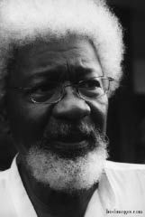

WOLE SOYINKA
Jochen Winter'in uyarladığı versiyondan yola çıkarak tercüme edilmiştir.
1934 yılında Batı Nijerya'daki Isara köyünde doğmuş olan Wole Soyinka 1986 yılında Nobel Edebiyat ödülü alan ilk Afrikalı yazar oldu. Ülkesindeki edebiyat çevrelerinin ötesinde saygı gören Soyinka, diktatör Sani Abacha'nun 1995 yılında yazar Ken Saro Wiwa'yı infaz ettirdiği Nijerya'daki politik olaylar üzerine fikir belirtmekten hiç vazgeçmedi. Kendisi de defalarca Nijerya'da hapse atılan Soyinka, Kaduna hapishanesinde iki yıl tecritte kaldı. Ardından Paris'te, New York'ta ve Los Angeles yakınlarında yaşadı. 1998 yazında Abacha'nın ölümünden sonra Wole Soyinka geçici süreler kalmak üzere Nijerya'ya geri döndü. Özellikle Aké, les années d'enfance (Belfond, 1994) adlı romanıyla uluslararası alanda büyük başarı kazandı. Roman, çocukluk anısı biçiminde, kıta geleneği ile Avrupa değerlerinden etkilenen bir burjuvazi arasında, Afrika toplumunun yoğun bir görünümünü sunar.
Sırasıyla Nijerya'da, Gana'da, Birleşik Krallık'ta ve Amerika Birleşik Devletleri'nde ders verirken trajedi ve komediler, şiirler, romanlar ve otobiyografik metinler yazdı. Wole Soyinka 1997 yılında, kurucularından biri olduğu Uluslararası Yazarlar Parlamentosu'nun başkanı oldu. Günümüzde, tehdit altındaki ya da sürgündeki yazarlar için tüm dünyada barınak sağlamayı görev edinmiş The North American Network of Cities of Asylum'un başkan yardımcısıdır (başkanı Russell Banks ve başkan yardımcısı da Salman Rushdie'dir). Alfred Jarry'nin Ubu Roi'sı tarzında yazılmış Baabou roi adlı piyesi, diktatör Sani Abacha'yı ve çılgınca katliamlarını sahneye koyar.
Ayrıca, Ibadan, les années pagaille'ın (Actes Sud, 1997) yazarıdır. Bu otobiyografik "doküman-roman"da yazmaya başlamasını ve ülkesinin bağımsızlığa kavuşmasını anlatmaktadır.
Şu eserleri de belirtebiliriz: Les interprètes (Présence Africaine, 2000), Cycyles sombres (L'Harmattan, 2004), Afriques: Climat de peur (Actes Sud, 2005), Baa bou roi (Actes Sud Papiers, 2005), Collected Plays (Oxford University Press, 2006).

SOYINKAINKA
Wole Soyinka, Afrika dinlerinin ve mitolojilerinin diğer dinleri, özellikle Hristiyanlık dinini ihtiyatla ve kuşkuyla ele almakta çok haklı olduklarını söylediniz.
Evet, bu kaygı bana kesinlikle gerekli geliyor, ister Hristiyanlık konusunda olsun, ister İslam ya da Hinduizm. Dünya çapında denen ve evrensel kardeşliği savunan bu dinler, günümüzde vazgeçemedikleri aşırı bir ayrılıkçılığın kanlı evrelerinden geçtiler. Hristiyanlar Hristiyan olmayanlar karşısında mesafe koydukça, Müslümanlar Katoliklere, Hindular Müslümanlara mesafe koydukça ve aynı teolojinin yandaşları olmadıkları gerekçesiyle "düşmanlar"la mücadele ettikçe, insan kavramı korkunç bir indirgemeye maruz kalır. Tersine, benim bildiğim Afrika dinlerinin çoğu bu tür ayrımcılığı kabul etmeye ve uygulamaya yatkın değillerdir. Örneğin benim de soyum olan Yorubalar inananlar ile başka bir inanca sahip olanlar arasında ayrımcılık yapmazlar. Tersine, onlar her bireyin kişisel bir yaratıcı Tanrı tarafından nitelendiğine inanırlar. Bir çocuk büyüyüp olgunlaştıkça bu Tanrı da gelişir; ardından, gençlik döneminde ya da yetişkin olduğunda, yeni bir koruyucu Tanrı eskisinin yerini alabilir. Bunun anlamı Tanrıların, birbirlerini yok etmek ve ortadan kaldırmak yerine koşulladıkları ve birbirlerinin yerine geçtikleri bir sürecin parçası olduğudur. Böylece, Yorubalı Hristiyan'ı bir yabancı olarak değil, kendisiyle aynı dünyaya mensup biri olarak kabul eder.
Afrika anlayışında, kişinin kendinin genişlemiş bir biçimi olarak ve belli ölçüler içinde de yansısı olarak kabul ettiği ötekine bu açıklık, dinsel duygudan kültürel alana doğrudan doğruya geçer. Kültürel alan, Afrikalı teolog John Mbiti'nin dediği gibi, mitlerin çokluğuna, gündelik yaşamdaki dirimselliklerine tanıklık eder.
Kesin olan şey, Afrika kabilelerinin farklı mitlerinin, her zaman özgül olan dünya görüşlerinin tamamlayıcı bir ilişki içinde olduğudur. Öncelikle yabancı olan şey, reddedilmekten çok özümsenir. Bunu açıklayan ve de kutsallığın görünüşte kutsaldışı olana hangi ölçüde müdahale ettiğini anlamamızı sağlayan bir örnek vereceğim size. Yorubalar için Shango şimşek tanrısıdır; kimi durumlarda aynı zamanda onarıcı adaletin de temsilcisidir. Ona tapanlar başka bir dünyadan gelen bir olguyla –örneğin elektrik– karşılaştıklarında, onu dine karşı bir şey olarak, şeytan işi olarak lanetlemezler. Hayır, o zamana dek kendilerinin olmuş mitolojik açıklamaları incelerler ve şunu sorarlar: Gücü ve etkisi bu olguya denk düşen bir Tanrımız yok mu bizim? Var elbette! Elektrik ve şimşek aynı güce dayanıyor, aynı temel ilkeyi temsil ediyor ve Shango böylece elektriğin de Tanrısı olur! Din, alışılmadık dışsal deneyimleri sembolizmlerin alışıldık bütüncesiyle uyumlandırarak kendine katar, onlarla birlikte varolmaya devam eder ve bununla zenginleşir.
Bu bağlamda, Afrika'nın sömürgecilik-öncesi tarihinde dinsel gerekçelerle sürdürülen savaş olmadığını, çatışmaların tamamen politik ya da ekonomik güdülenimleri olduğunu belirtiyorsunuz. Nijeryalı Chinua Achebe'nin edebiyatında da bulunan bir fikir bu.
Benim derin inancım bu. Dünya çapında bir tür insanileştirici teoloji arayışında, kimi Afrika dinlerinden belli bir ders çıkartılabilir; özellikle de Yorubaların Tanrıları Orisha'yı kutsamalarından. Kendilerini tatmin etmek için savaş ilan etmezler, görünmez bir Tanrı adına –bu Tanrı gerçekte çok insansever ilkeler aktarmış olsa bile– silah ele alarak şiddet yoluyla başkalarının inançlarını değiştirmeye kalkışmazlar. Musa'nın ve on emrinin hikâyesi bir yana, peygamberin özel ayrıcalıkları bir yana, kimse yüce bir yaratıktan doğrudan ve gerçek buyruklar ve teoriler aldığını ileri süremez, çünkü bu türden Tanrıları kimse görmemiştir. Yalnızca peygamberlerin, kâhinlerin, teologların bize verdikleri bilgilere sahibiz. Ve bence, hiçbir bilgelik derlemesinin bir diğerinden daha fazla ya da daha az değeri yoktur.
Afrika kültürleri arasındaki bir diğer ortak nokta hayatın gizemine saygı gösterip onurlandırmalarında yatıyor. Rasyonalitenin ve teknolojik yapabilirliklerin egemenliğindeki Batılı entelektüel gelenekler bu tutumu yavaş yavaş yitirdiler. Bu koşullarda, insan ile toprak arasındaki, insan ile gökyüzü arasındaki daha az görünür ilişkilerin kavranmasına Afrika'nın katkısını nasıl tanımlıyorsunuz? Jean Rouch'un örneğin Moi, un Noir adlı çalışmasında fazlasıyla mevcut bir sorudur bu.
Afrikalı dünya görüşü öncelikle gerçek bir insancıllığın damgasını taşır. Bütünselliği ve varoluşu içindeki insan bu görüşün merkezidir. Bunun anlamı insanın ne bilime, ne Tanrısal bir vahye, ne de herhangi bir hipoteze feda edilebileceğidir. İnsan kendiliği daima vardır, özelikle bilgi edinmeye çalıştığımız alanlarda. Çok sayıda Afrika Tanrısının kusursuzluk statüsüne sahip olmayıp, tersine ölümlüler düzeyine indirgenmiş olmasının nedeni budur: Ölümlüdürler, hata işlerler, bunların bedelini ödemeleri ve insanların yargısına boyun eğmeleri gerekir. Benim gözümde bu önemli bir özelliktir. Dinsel ya da entelektüel bir doktrin üzerinde temellenerek dünyaya musallat olan ve yok eden köktenci bunamanın kuruntularını dağıtır. Bu tür olgular Afrika dinlerinde görülmez.
Kendi başına çeşitli ve çoklu olan Afrika düşüncesi ile sanayileşmiş ulusların başdöndürücü mekanikleşmesinin sonunda kültürel çeşitliliği ortadan kaldırdığı Batı'nın giderek daha basmakalıplaşan düşünce alışkanlıkları arasındaki uçurumu nasıl niteleyebiliriz?
Batı dünyasının sorunu, bilimi ve teknolojiyi putlaştırması ve yaşamı bu putlara tabi kılmasıdır. Buna karşılık Afrika dinlerinde uygarlığın her atılımı öngörülebilir. Başka deyişle: Bilgi, yeni öğeleri daima önyargısızca –ama onları yüceltmeden– kendine dahil ettiği ölçüde sonsuza dek yayılabilir. İnsan ilişkilerinde yaratıcı kapasitenin zarar vermemesi gereken kimi yönetici çizgiler vardır, bu nedenle teknoloji daima ilişkilerin, toplumun organik evriminin, keza bilgi edinmenin kimi temel yöntemlerinin hizmetinde olmalıdır. İnsana derinden kök salmış bu yönetici çizgiler topluluğun bağdaşıklığına tanıklık eder; neyin uygulanması gerektiğine, kültürler arası dengeyi neyin bozabileceğini, neyin teknik fetihler çerçevesinde düşünülmesi gerektiğini onlar belirler. Bizim bir atom bombamız var ve onun diktasına boyun eğiyoruz, onu patlatacağız denmez. Topyekun bir iletişime imkân tanıyan internet çağında olduğumuzdan, her şeyi iletme yeteneğimiz de var. Hayır, içeriği kontrol ediyoruz, yeni bir teknolojinin dayatmaya çalıştığı gerekliliklerin üzerine yerleşiriz. Bana öyle geliyor ki bu, Afrika toplumları ile mekanist bir anlayışa sahip Avrupa toplumları arasındaki temel farklılıktır.
Afrika felsefesinin geleneksel bir kanon'dan yola çıkması anlamında içkin olarak Afrikalı bir felsefeden söz edebilir miyiz? Felsefe ile mitoloji arasındaki etkileşim nasıl bir biçim alır?
Afrika mitolojisi tıpkı Afrika dini ya da Afrika sanatı kadar az homojendir. Örneğin Dogon anlayışları Yoruba ya da Kwazulu anlayışlarından net bir şekilde ayrılır. Dolayısıyla burada tekboyutlu açıklama modelleriyle çalışmaktan sakınmak gerekir. Ve tüm diğer toplumlarda olduğu gibi, felsefe kökenlerini mitolojiden almaktadır. Mitoloji sembolik bir yapım olduğu ölçüde, felsefe de onun soyut sapması olarak görülür. Ama gerçekte, felsefenin kendisi mitolojik yapımla eşdeğerde bir yapımdır, çünkü o da olguları yorumlamayı ve bilgi üretmeyi hedefler. Her iki durumda da karşımızdaki son derece karmaşık ve çekici bir düşünce yapısıdır ve dünyanın şeması burada yansır.
Yine de burada hatırlamak gerekir ki, Batılı toplumlar, yirmi birinci yüzyıl başında, mitle ilişkilerini yitirmişlerdir; en azından klasik biçimiyle.
Çok haklı olarak "klasik" terimine vurgu yapıyorsunuz. Evet, Batı klasik mitolojiyi terk etti. Ama tersine, sürekli olarak yeni mitlerin ortaya çıktığı görülüyor, örneğin kozmik uzam miti. Günümüzde, bu canlandırılmakta ve özellikle sinemada bunun yeni versiyonları verilmektedir. Bu durumda entelektüel bir mitin söz konusu olmadığı açıktır; insan varlığının mahrem kalbini merkez alan bir şey ile varlığını tekniğe borçlu olan ve yayılma tarzını da burada bulan bir başka şey arasında ayrım yapıyorum. İçgüdü tarafından olduğu kadar tin tarafından da belirlenen miti canlandırmak için insanlar içinde büyüdükleri dine dönüyorlar. Bu entelektüel kültür mirası varlığını sürdürüyor. Ne yazık ki, günümüz Avrupa kültürlerinde bitkin bir yaşam sürüyor, çünkü şiiri ve müziği içine sindirmiş değil. Umarım biz Afrikalılar bu durumdan korunuruz.
Ben de tam buna gelmek istiyordum. Sekülerleşmenin sonucu tinsellik yitimi oldu, metafizik olarak yorumlanan bir düzende insana düşen yeri sekülerleşme elinden alıyor. En geç Rönesans'tan bu yana Batı düşüncesi bu düzenden uzaklaşıyor, ekonomik ölçülebilirlik ve verimlilik postulatına karşılık verebilmek için bu düzeni inkâr ediyor. Politik yaşam için de sonuçları olacak bir tür entelektüel ve kozmik dengeyi yeniden bulabilmek için Avrupalı bu süreç karşısında nasıl davranmalı?
Topluluğa geri dönmesi, topluluğu bir mülahaza konusu olarak görmesi gerekir ki entelektüel sürgününden çıkabilsin. Ama aynı zamanda, "entelektüel güvenlik" deyimini de ihtiyatlı kullanmalıyız. Düşünürler ve bilginler bilimden önceki dönemlerde tekerleğe bağlandı ya da odunların üzerinde yakıldılar, çünkü bu sözde "entelektüel güvenliği", güvenli görünen bir düzeni sorguluyorlardı. Ortaçağ hiyerarşisi, kendisine karşı koyan eğilimleri bütün güçleriyle bastırarak iktidarını uyguladı. Bu nedenle ben yalnızca yaşamın bütün alanlarından saçılan bilgiye, rahibin, kadının, çocuğun aktardığı bilgiye saygı gösteririm. Benim gönderme yaptığım entelektüel güvenlik budur.
Birey ile topluluk arasında bir bağ kurmanın zorunluluğundan söz ediyorsunuz. Fakat, tıkabasa eğitimli –on sekizinci yüzyılda John Locke'un geliştirdiği possessive individualism kavramından itibaren, hatta ondan önce– öznelciliğin ve liberalizmin ilkelerine boyun eğmiş Batılı insan bu bağın yolunu nasıl bulabilir? Bu zaman zarfında ekonomide bile mutlak bir boyut verilmiş olan Ego'yu aşma imkânları nelerdir?
Bu bireycilik elbette köktenciliğin bir başka biçimini oluşturur –özgürlük ve haysiyet fikirlerinin aşırıya vardırıldığı bir ideoloji. İlk zamanlarda, bunların bir açıklaması elbette vardı, çünkü bireyin kitle içinde boğulmasını önlüyorlardı. Yine de, topluluğu oluşturan bireydir. Birey bu gerekliği ihmal ederse, bir bütünün öğesi olarak mecburen genel çıkarın hizmetinde olduğunu inkâr ederse kendini marjda bulur. Bireyin çıkarları ile topluluğun çıkarlarını daima dengelemek gerekir. Bireyi feda etmemeli; keza, bireyin topluluğa yabancılaşmaya ve doymak bilmez bir iktidar iştahını gidermek için topluluğu sömürmeye de hakkı yoktur. Her koşulda, sizin görüşünüzü bir noktada paylaşıyorum: Günümüzde öfke uyandıran bireycilik korkunç bir entelektüel sıkıntıdır.
Bireycilik yalnızca zarar vermekle kalmıyor, dahası, Batı toplumlarını içerden parçalıyor, sözümona periferik kültürlerle ilişkilerini de etkiliyor, bu ilişki genellikle son derece etnik-merkezli bir perspektif içinde ifade buluyor. Örneğin Alman Afrika uzmanı Leo Frobenius'u, Afrika'daki fikir ve yaşam dünyasına asla gerçekten nüfuz etmemekle, Afrikalının özünü anlamaya ciddi olarak asla teşebbüs etmemekle suçluyorsunuz.
Frobenius'un kalıplaşmış kavram ve paradigmaları vardı ve reddettiği ya da anlamadığı şeyi dışlamak için, kendisine uygun gelmeyen şeyi bunların içine yerleştiriyordu. Muhteşem bir gelişme göstermiş olan bir Afrika kültürü karşısında, o dayanılmaz kibriyle, bunun ora yerlileri tarafından kurulmuş olamayacağını, uzak ve daha gelişmiş, hangisi olduğu meçhul bir uygarlığın göçmenleri tarafından kurulmuş olduğunu, Afrikalıların da bunların geri kalmış soydaşları olduğunu iddia etmeye kadar işi vardırdı. Halk, kültür ve yaratıcılık arasındaki ilişkileri ayırt edebilecek ve bunlara saygı gösterebilecek biri değildi. Mitolojiyi daha yakından inceleyecek ve onu karşısına çıkan bol kültür tanıklıklarıyla ilişkiye sokacak alçakgönüllülüğü bile gösteremiyor. Geldi, canını istediğini çöplendi ve görünüşte bir model değeri taşıyan güzel antropolojik formüller oluşturmak için bunlardan yararlandı.
Avrupalılar ve Kuzey Amerikalılar bu küstah tutumdan hiç vazgeçmediler. Günümüzde, onların gözünde "iyi davranan" Üçüncü Dünya ülkelerine mali ve ekonomik bir destekte bulunuyorlar –politik ve ekonomik olarak, IMF ya da Dünya Bankası veyahut Gelişme Bakanları aracılığıyla–, ve çoğu zaman da yerel değerleri dikkate almıyorlar. Dışardan teknoloji ihraç ediyorlar ve bu da genellikle, kendi insani kimliklerini yitirme riski içerisindeki söz konusu ülkelerin kültürel ve dini değerleriyle çelişki halinde oluyor. Kültür "folklor"dan fazlasıdır, teknoloji "kültüre uyum sağlamalıdır", bütün kültürlerin kendi "yaratıcı sermaye"leri vardır ve de politiktirler.
Evet, bu sadakalar bir utançtır. Yine de bir fon sağlayıcının verdiği imkânların nasıl kullanıldığını sorma hakkı ve hatta görevi olduğu kanısındayım; bunlar yabancı banka kasalarında mı yok oluyorlar, bir devlet başkanı halkı ezmek için bunları kullanırken halk da ekonomiyi kalkındırmak için daha fazla mı zarar görüyor... Saptanan hedefe, yaşam kalitesinin yükselmesine erişilmediğinde, bir başka türde kölelik yerleştirildiğinde, o zaman zengin devletlerin gelişmeye yardımlarını yeniden düşünmesi gerekir.
Bir süreden beri, bir yandan bazı Afrika ülkelerinin borçlarını silerken, diğer yandan onlara özyönetim hakkı verme gibi bir eğilim içinde oldukları doğrudur. Bu tür jestler karşısında sizin görüşünüz nedir?
Bunu niçin vermek zorundalar? Yoksul ülkeler bunu derhal talep etmeyecek midir? Tamam, bu konunun ayrıntılı bir yorum gerektirdiğini biliyoruz. Fakat bölgeye gönderilen uzmanların ihtiyaçlarına ayrılan gelişmeye yardımın yüksek oranı dikkate alındığında –on yıl önce incelediğimiz bir Afrika ülkesinde % 85'lere varan bir oran– şoke oluruz ve bu kadar eksiksiz bir bağımlılığa nasıl erişildiğini anlayamayız. Postkoloniyal dönem kurtuluş değil, eski sömürge güçlerine hammaddelerin teslim edildiği dönem oldu, onlar da giderek artan bir refah sağladılar. Çok dengesiz bu ilişki günümüzde de beslenmektedir, bağışçı ülkeler bir tür sömürge valisine sahip olma arzusundadır ve bu valiler ise, karşılığında önemli şeyler vermek zorunda kalmadan iş bağlayabildikleri Afrikalı diktatörler biçimini almıştır. Ama herhangi bir anda öyle bir noktaya gelinir ki, her bir ulusumuz kendi bahtsızlığının sorumluluğunu kendisini sömüren zengin ulusların sırtına daha ne kadar atabileceğini kendi kendine sormak zorunda kalabilir. Bu noktada yalnızca şunu diyeceğiz: Artık yeter, bu yozlaşmış yöneticilerden kurtulmak istiyoruz, ticaret partnerlerimizle daha adil koşullarda anlaşmak ve kendi ihtiyaç duyduğumuz ürünleri kendimiz için yetiştirmek istiyoruz.
Her şeyi yutan bu yararcı düşünce akışına direnmenin bir yolu, kendi kültürünün entelektüel gelenekleriyle yeniden ve bilinçli bir şekilde yüzleşmek olacaktır kuşkusuz. Afrikalılar köklerine böyle bir geri dönüşü hedeflemeli midir?
Söz konusu durumda, başkalarının köklerini görmeme riski her zaman vardır. Ayrıca, hiçbir toplum kendi kökensel durumunu yeniden oluşturamaz. Ama kendi içimizde daima taşıdığımız bir kaynak vardır, bu çekirdeğin içinde kültür, zihniyet ve tarih bir birlik halinde kaynaşır. Her gün bu temel üzerinde inşa edip şekillendirmeye devam ediyoruz. Bunu hatırlamak bence şarttır.
Afrika ruhuna derinden kök salmış olan aşkınlık kapasitesi, özellikle atalar, yaşayanlar ve henüz doğmamış olanlar arasındaki kesin ayrımı ortadan kaldırdığı için bunun en iyi koşullarını sağlar. Örneğin Madagaskar'dan Nijerya'ya dek birçok Afrika kültüründeki "ata kültü"nü düşünüyorum.
Evet, bu kıtanın aşağı yukarı bütün dinleri üç dünyanın tek bir süreklilik oluşturduğu fikrini savunuyor. Bu yalnızca bir düşünce modeli değil, bu yalnızca farklı ayinlerde ve bayramlarda ortaya çıkmakla kalmaz, dolaysız algıyı da belirler. Doğan bir çocuk atalardan biriyle aynı karakteristikleri taşır ve ona çok erken yaşta neredeyse bir yetişkin muamelesi yapılır. Sürekliliğe bu inanç, Afrika toplumlarının toplumsal yapılarını baştan aşağı kat eder.
Batı'nın kendi bilincinden şiddetle söküp attığı kurban etme fikri burada nasıl bir rol oynar?
İnsan atalarıyla ya da ruhlarla çevrili olduğunu bildiğinde, bu dünya bize sürekli olarak görünmez bir öte dünyaya geçiş imkânı sağladığında, sembolik kurban etmenin temel işlevi varoluş düzeyleri arasındaki bu etkileşimi korumak olur.
Aké adlı romanınızda, çok uzun yıllarda büyüyen ve değişen her şeyin ortasında sarsılmaz süreyi temsil eden ağaç olan baobab üzerine yazıyorsunuz.
Evet, burada sonsuzluk ve değişim paradoksuyla karşı karşıyayız ve bu paradoks bütün olarak bireyi ve toplumu nitelemektedir. Gerçekliğin iki yüzü vardır ve biz aynı anda bu iki yüzle karşı karşıyayızdır.
Bu anlayış Bukola kişiliğinin de temeli. Romanınızdaki bu genç kız sonsuz yaşam döngüsünden (abiku) geçer, öldükçe yeniden doğar. Transa kapılmış ve ölmüş ruhlarla ilişkiye giren genç bir şaman biçiminde cisimleşir. Şaman geleneğinin Afrika'da varlığını sürdüreceği kanısında mısınız?
Bu gelenek ne bizde ne başka halklarda asla yok olmayacaktır. Ne yazık ki, Avrupa toplumlarında sekt biçimini almıştır, çünkü oradaki insanların büyülü gerçekliğe, kendi varoluşlarının şamanik yanına doğal yollardan erişim imkânı yoktur. Metafizik baskı engellendiğinde kişinin ruh hali bozulur ve bir an gelir bu baskı uğursuz bir biçimde serbest kalır. Bu durum bizim aşkınlık arzusuyla dolu olduğumuzu ve bundan kaçamayacağımızı kanıtlar.
Bu arzu bilinçaltında fışkırıyor, sezgi sayesinde ifade buluyor, dinde ve sanatta geçerli bir temsil buluyor.
Avrupalı düşünürler de yaratıcılığın kökenini tanıdılar; örneğin Arthur Koestler analitik zekâyı koşullayan sezgisel öğenin müspet bilimlerdeki önemini defalarca vurguladı. Sanatçı için sezgi, yaratıcı güç ve farklı derecelerde cinlenme birbirinden ayrılmazcasına bağlıdır. Bilinçaltıyla birlikte çalışır, kimi zaman uyurken ve uyandığında aniden bir metafor gelir, bir sözcük dizisi, müzikal bir cümle. Ama sonra bunları bilincin aletleriyle işler; Afrikalı sanatçı da, kimi önyargıların tersine, yalnızca vecd halinde yaratan biri değildir.
Bu bakış açısından, her Avrupalı'nın içinde bir Afrikalı gizlidir diyen Peter Brook'un cümlesi çok doğru.
Bu anlayış Batı dünyasını mekanik ve basmakalıp bakışından kurtarabilir. Ama şunu unutmayalım: Tersi de doğrudur.